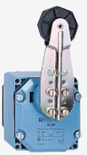
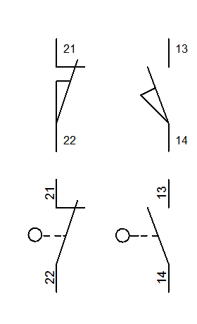
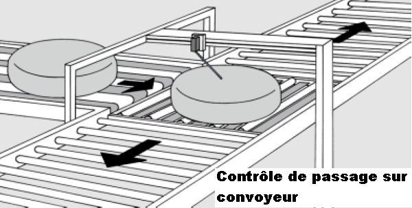
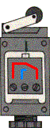
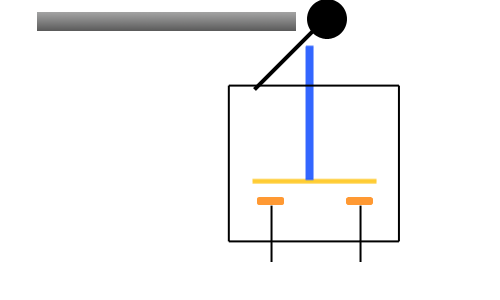

|
Les capteurs Tout Ou Rien |
Les capteurs mécaniques ou interrupteurs de position sont en contact direct avec la pièce en mouvement qu'il faut détecter.
L'action mécanique sur la partie mobile du capteur permet d'établir ou d'interrompre un contact électrique.
Ils transmettent au système de traitement les informations de présence, d'absence, de passage, de positionnement ou de fin de course.
  
Ci-dessous un exemple : ce n’est ni plus ni moins qu'un interrupteur, lorsqu'un objet vient en contact avec la tête, celle ci s'enfonce et vient faire coller les contacts et ainsi fermer le circuit. (cela fonctionne aussi avec un contact Normalement Fermé (NF), d’ailleurs ils sont souvent munis à la fois d’un contact Normalement Ouvert (NO) et d’un NF ).
 
Créé avec HelpNDoc Personal Edition: Éditeur de documentation CHM facile